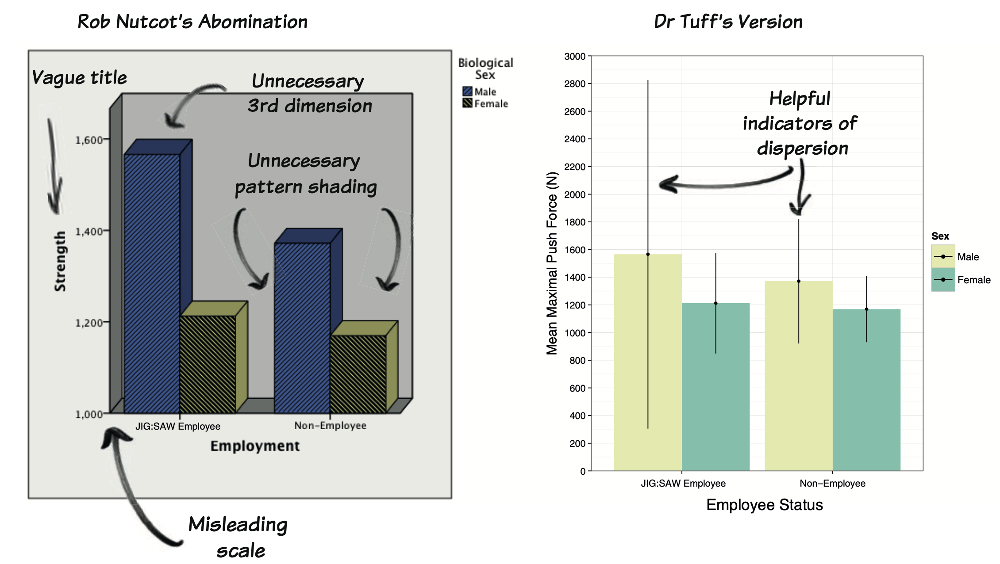
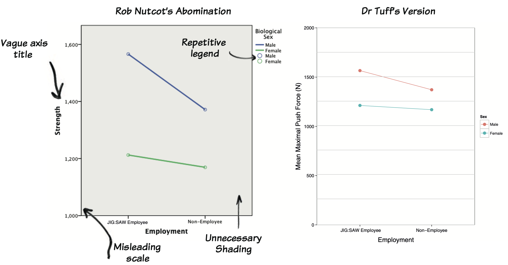
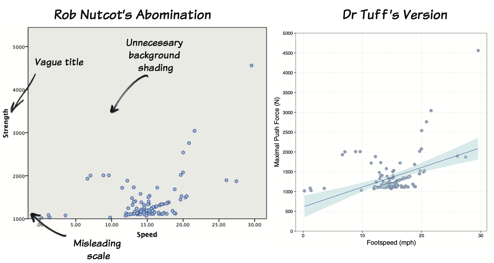
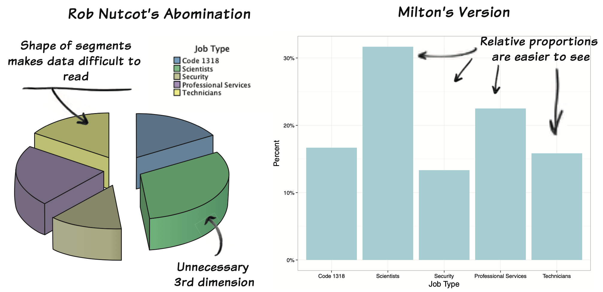
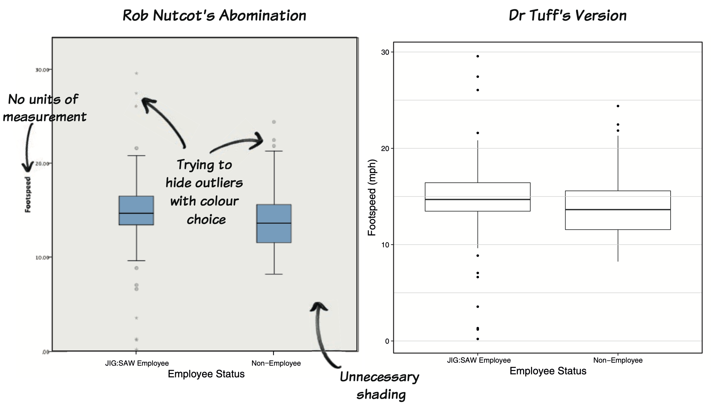
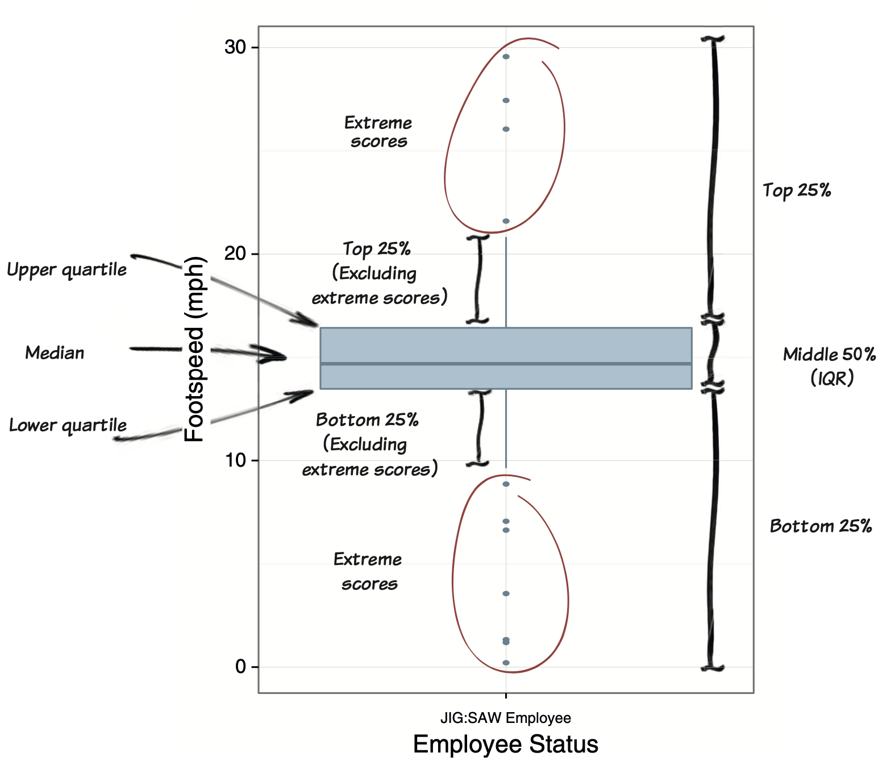

Presenting
Data
Presenting Data
Graphs are visual representations of data that help in understanding relationships, trends, and distributions.
How to Choose the Right Graph
| Purpose | Best Graph |
|---|---|
| Compare categories | Bar chart, Pie Chart |
| Show distribution | Histogram, Box plot, Violin plot |
| Show trends over time | Line graph, Area chart |
| Show relationships/correlations | Scatter plot, Bubble chart |
| Visualize patterns in data | Heatmap |
Bar Chart
Bar Chart
Purpose: Compare quantities of categorical data.
When to Use:
- Show comparisons between categories (e.g., sales by region, population by country).
- Highlight differences in frequency or proportion.
Practice Bar Chart
Unordered Bar Chart: Use for simple category visualization.
Ordered Bar Chart: Highlights the most/least common categories.
Horizontal Bar Chart: Improves readability for long category names.
Grouped Bar Chart: Compares subcategories across main categories.
Stacked Bar Chart: Shows composition of each category.
Histogram

Histogram
Histogram
Purpose: Display the distribution of numerical data.
When to Use:
- Visualize frequency distribution (e.g., income levels, test scores).
- Identify skewness, spread, and modes in data.
Histogram Key Points
Bins: The range of values divided into intervals. The width of these intervals determines the bin size.
Axis:
- X-axis: The variable of interest (e.g., numerical values).
- Y-axis: The frequency (count) or density of observations.
Practice Histograms
Basic Histogram: General overview of distribution.
Custom Bin Width: Fine-tuning for specific data patterns.
Density Overlaid: Assess distribution shape visually.
Grouped Histogram: Compare distributions across subgroups.
Faceted Histogram: Side-by-side comparison of subgroups.
Cumulative Histogram: Understand cumulative trends in the data.
Line Graph
Line Graph
Purpose: Show trends over time or sequences.
When to Use:
- Analyze patterns over intervals (e.g., stock prices, temperature changes).
- Compare multiple trends by plotting multiple lines.
Practice Line Graphs
Basic Line Graph: Single line showing trends for one variable.
Multiple Line Graphs: Comparing trends of multiple variables.
Smoothed Line Graph: Adds a smooth curve to depict trends better.
Line Graph with Points: Shows data points explicitly.
Faceted Line Graph: Separate panels for different groups or variables.
Step Line Graph: Shows data changes stepwise.
Scatter Plot
Scatter Plot
Purpose: Show relationships or correlations between two numerical variables.
Scatter plots are commonly used to:
- Observe correlations or relationships between variables.
- Detect patterns, trends, or clusters.
- Identify potential outliers.
Key Points Scatter Points
X-axis: Represents one variable (independent or predictor).
Y-axis: Represents another variable (dependent or outcome).
Points: Each point represents one observation.
Practice Scatter Plots
- Basic Scatter Plot: Visualize relationships between two continuous variables.
- With Groups: Compare relationships across categories or groups.
- With Regression Line: Observe trends and linear relationships.
- With Size Aesthetic: Add a third dimension to the plot (e.g., size of points).
- Faceted Scatter Plot: Separate the data into different groups or panels.
- With Transparency: Handle overplotting when data points overlap.
Pie Chart
Pie Chart
Purpose: Represent proportions of a whole.
When to Use:
- Show parts of a total (e.g., market share, budget allocation).
- Use with few categories to avoid clutter.
Limitations:
- Hard to interpret with many categories.
- Poor for precise comparisons; consider bar charts for clarity.
Practice Pie Charts
Basic Pie Chart Represent proportions of categories in a single dataset.
With Percentages Display proportions explicitly for easier interpretation.
Donut Chart Aesthetic variation of a pie chart, often used in dashboards.
Faceted Pie Chart Compare distributions across multiple groups.
Exploded Pie Chart Highlight a specific slice for emphasis.
Box Plot (or Box-and-Whisker Plot)
 ## Box Plot
Purpose: Summarize the distribution of data through quartiles.
When to Use:
- Identify spread, outliers, and medians (e.g., comparing test scores across groups).
- Compare distributions across categories.
Box Plot
Box Plot, Five-number summary:
Minimum: The smallest data point excluding outliers.
First Quartile (Q1): The median of the lower half of the dataset.
Median (Q2): The middle value of the dataset.
Third Quartile (Q3): The median of the upper half of the dataset.
Maximum: The largest data point excluding outliers.
Practice Box Plots
Basic Box Plot: Summarizing distribution of a single variable.
Box Plot by Category: Comparing distributions across categories.
With Outliers Highlighted: Identifying potential outliers.
Horizontal Box Plot: Improving readability for long category names.
Grouped Box Plot: Comparing multiple groups within categories.
Violin and Box Plot Combination: Adding detailed distribution insights to a box plot.
Customized Box Plot: Enhancing visual appeal for reports or presentations.
Heatmap

Heatmap
Purpose: Represent data in a matrix format using color coding.
When to Use:
- Visualize large datasets (e.g., correlations, gene expression).
- Highlight patterns, hotspots and clusters.
Practice Heat Maps Plots
Basic Heat Map Visualizing relationships between categories and values.
Heat Map with Labels Adding specific values for easier interpretation.
Correlation Heat Map Visualizing pairwise correlations between variables.
Time-Series Heat Map Tracking changes over time for multiple categories.
Diverging Heat Map Highlighting deviations from a baseline or midpoint.